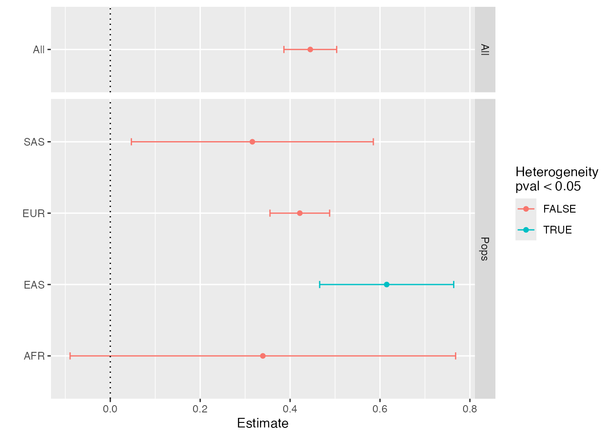
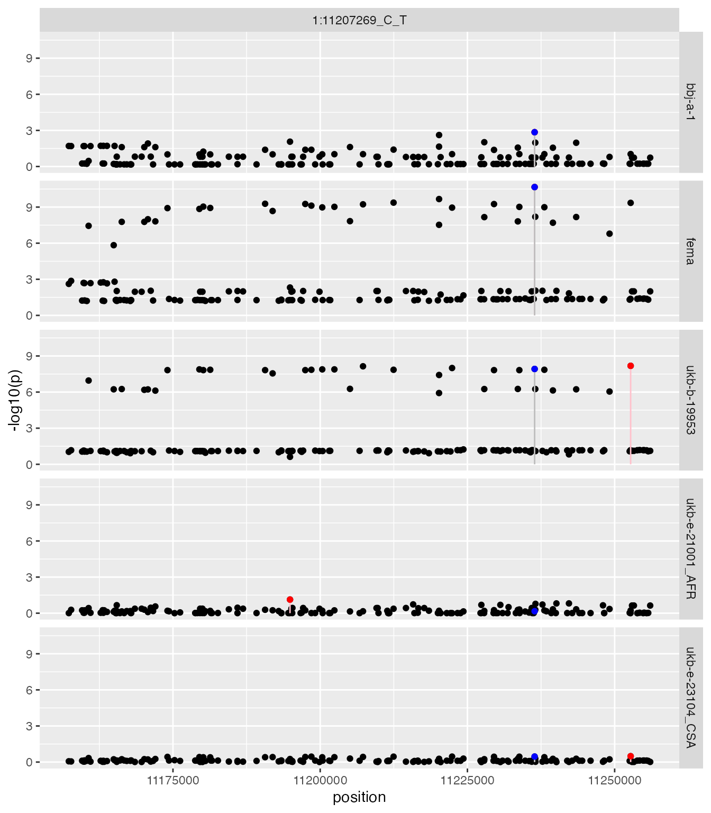
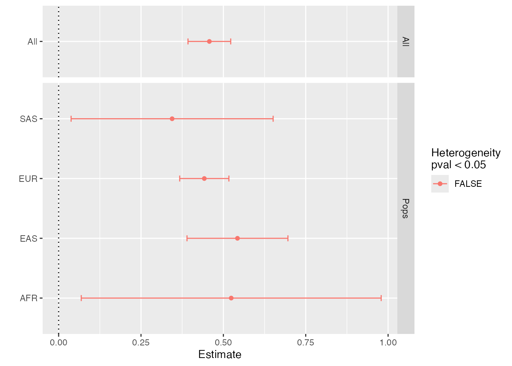
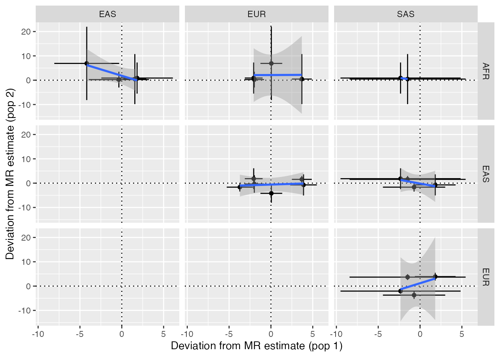
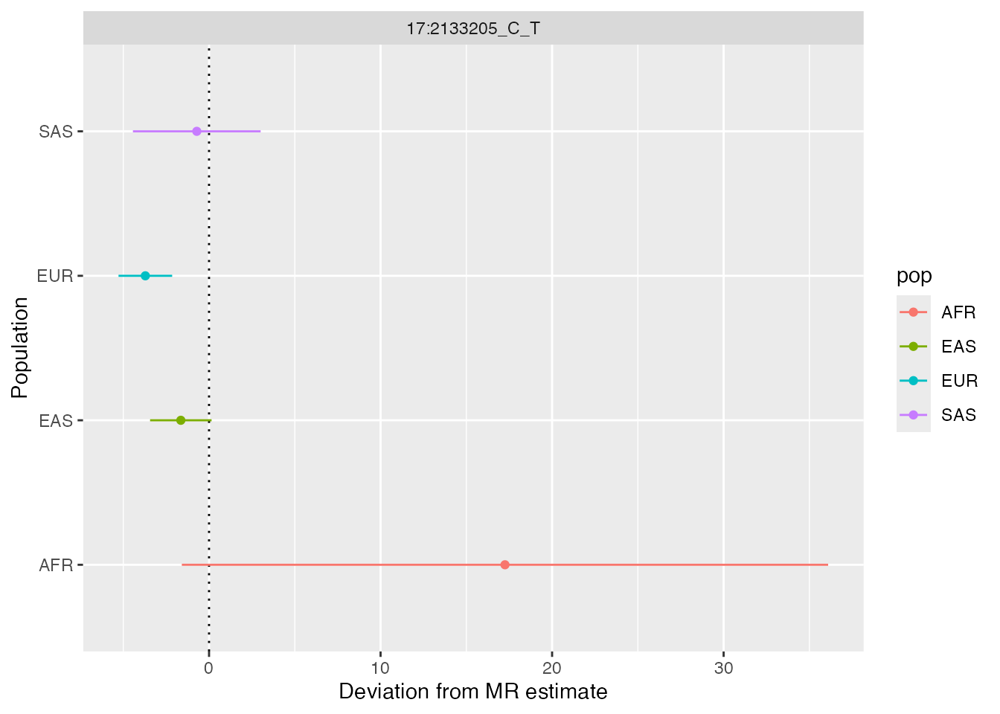
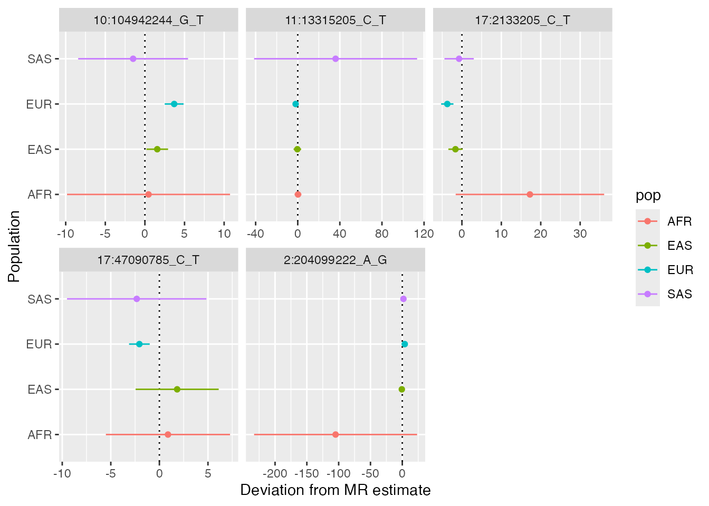
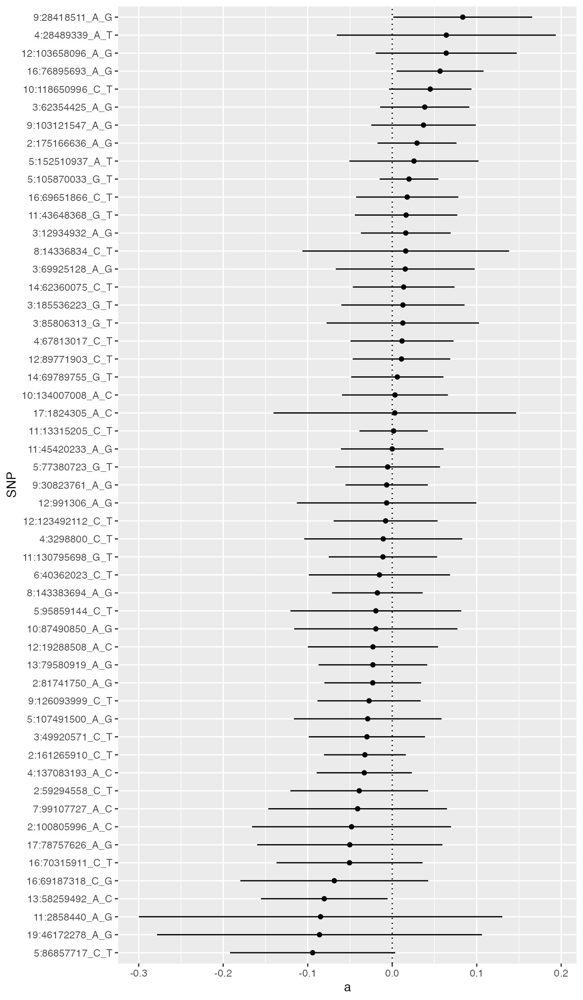
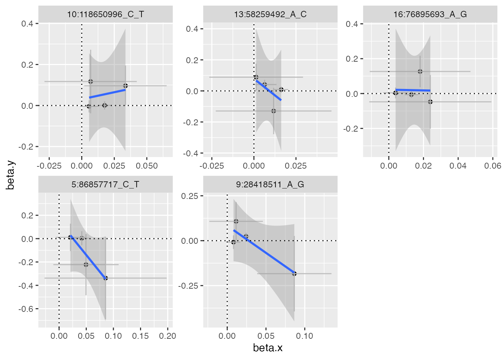

Introduction
This software attempts to bring together various tools to improve cross-ancestry Mendelian randomisation. It will use an example of performing analysis of BMI on coronary heart disease across four major ancestral groups.
Overview:
- Initialise data
- Check phenotype scales across ancestries
- Extract instruments
- Evaluate instrument heterogeneity across populations
- Extract outcome data
- Harmonise exposure and outcome data
- Perform analysis using raw instruments
- Perform regional scan to obtain LD agnostic instruments
- Re-perform analysis using regional instruments
- Evaluate similarity of pleiotropy across ancestry
- Evaluate similarity of instrument-exposure associations
- Use cross-population instrument-exposure heterogeneity in MR GxE framework to estimate pleiotropy distributions
- Saving and loading data
Initialise data
CAMeRa begins by choosing an exposure and outcome hypothesis that can be tested in multi-ancestral populations. Here, we will be estimating the causal effect of body mass index (BMI) on coronary heart disease (CHD) in European (EUR), East Asian (EAS), African (AFR) and South Asian (SAS) ancestries.
Summary statistics data can be extracted from the IEU GWAS database using the TwoSampleMR package. A list of available traits can be obtained using:
traits <- TwoSampleMR::available_outcomes()You can also browse the available traits here: https://gwas.mrcieu.ac.uk/. Also see other vignettes on this site about how you can use local summary statistics instead.
Querying the OpenGWAS API requires an access token, see the ieugwasr guide for how to obtain and set one up. The examples in this vignette make many API queries and so may use up a large part of your allowance. To keep this vignette fast to build, the code chunks that query the API are not run here, instead the results are loaded from an example object that ships with the package.
Once you obtain the study IDs for the exposure and the outcome, open R6 class environment to run CAMERA. The minimum information required for CAMERA is the following:
- Summary statistics for the exposure and the outcome
- Population information
- Plink (version 1.90)
- LD reference data
Plink (version 1.90) and LD reference data are required to identify instruments that can be used for both populations. LD reference data can be accessed from: http://fileserve.mrcieu.ac.uk/ld/1kg.v3.tgz.
The example below uses the genetics.binaRies package to locate a plink executable. It is not installed with CAMeRa, so either install it with
install.packages("genetics.binaRies", repos = c("https://mrcieu.r-universe.dev", "https://cloud.r-project.org"))or set plink to the path of your own plink
executable.
bfile_dir <- "/path/to/ld_files"
x <- CAMERA$new(
exposure_ids=c(
"ukb-e-23104_CSA",
"ukb-e-21001_AFR",
"ukb-b-19953",
"bbj-a-1"
),
outcome_ids=c(
"ukb-e-411_CSA",
"ukb-e-411_AFR",
"ieu-a-7",
"bbj-a-109"
),
pops = c("SAS", "AFR", "EUR", "EAS"),
bfiles=file.path(bfile_dir, c("SAS", "AFR", "EUR", "EAS")),
plink = genetics.binaRies::get_plink_binary(),
radius=50000,
clump_pop="EUR"
)
xIn this vignette the code chunks that query OpenGWAS or need plink are shown but not run. Instead, we load the results of running them from an example object that ships with the package. This object was created in September 2026. The data in OpenGWAS can change over time, so if you run the analysis yourself your results may differ from those shown here.
x_example <- readRDS(system.file(package="CAMeRa", "extdata/example-CAMERA.rds"))
x <- CAMERA$new()
x$import(x_example)
rm(x_example)Check phenotype scales across ancestries
Make sure that the exposures/outcomes are matched across the populations. The different populations should have the same exposure-outcome pair, with exposure and outcome traits measured in the same way and with the same units. Also, instrument-trait associations should be consistent between the populations (e.g. how similar SNP-BMI association in EUR to SNP-BMI association in EAS). You can check this as follows:
x$check_phenotypes(ids=x$exposure_ids)
x$check_phenotypes(ids=x$outcome_ids)Extract instruments
We can now perform the analysis, which will do the following:
- Extract instruments for the exposures
- Check the validity of the instruments across the populations (Standardise/scale the data if necessary)
- Extract new instruments based on LD information and fine-mapping
- Extract instruments for the outcomes
- Harmonise the exposure data and the outcome data
- Perform MR
See ?CAMERA, or the CAMERA
reference page, for details of the options and outputs of each
method. A summary of the methods used in this vignette is given in the
Overview of methods section at the
end.
The following function identifies SNPs that have strong associations with the exposure in each population. This is the same method as instrument extraction for multivariable MR.
x$extract_instruments()A data frame of the extracted instruments is stored in
x$instrument_raw
str(x$instrument_raw)
#> 'data.frame': 1420 obs. of 14 variables:
#> $ rsid : chr "1:2723214_A_C" "1:6657424_A_C" "1:11207269_C_T" "1:19934900_A_G" ...
#> $ chr : chr "1" "1" "1" "1" ...
#> $ position : int 2723214 6657424 11207269 19934900 23313353 33784146 39564930 47678458 49996959 66434743 ...
#> $ id : chr "ukb-e-23104_CSA" "ukb-e-23104_CSA" "ukb-e-23104_CSA" "ukb-e-23104_CSA" ...
#> $ beta : num -0.0266 -0.0235 0.0171 -0.0148 -0.0169 ...
#> $ se : num 0.0154 0.0154 0.0192 0.0169 0.0146 ...
#> $ p : num 0.0841 0.1262 0.3728 0.3823 0.2496 ...
#> $ ea : chr "A" "A" "C" "A" ...
#> $ nea : chr "C" "C" "T" "G" ...
#> $ eaf : num 0.33 0.324 0.166 0.234 0.578 ...
#> $ units : chr "NA" "NA" "NA" "NA" ...
#> $ samplesize: num 8658 8658 8658 8658 8658 ...
#> $ method : chr "raw" "raw" "raw" "raw" ...
#> $ rsido : chr "rs4648450" "rs3866805" "rs2791643" "rs61740466" ...Evaluate instrument heterogeneity across populations
It is important to ensure that the instruments for the exposure are valid across the populations. Once instruments for the exposure trait are identified for each population, we can assess specificity of the instruments. Each of the following functions estimates heterogeneity of the instruments between and calculates fraction of the instruments (obtained from the Step 1) that are replicated between the populations.
x$instrument_heterogeneity()
#> # A tibble: 6 × 9
#> Reference Replication nsnp agreement se pval I2 Q Q_pval
#> <chr> <chr> <int> <dbl> <dbl> <dbl> <dbl> <dbl> <dbl>
#> 1 ukb-b-199… ukb-e-2310… 346 0.700 0.0501 2.85e- 44 0.0469 363. 2.42e- 1
#> 2 ukb-b-199… ukb-e-2100… 346 0.454 0.0719 2.66e- 10 0.124 395. 3.23e- 2
#> 3 ukb-b-199… bbj-a-1 346 0.584 0.0214 3.04e-164 0.619 909. 2.75e- 52
#> 4 bbj-a-1 ukb-e-2310… 44 0.773 0.0974 2.04e- 15 0.202 55.2 1.01e- 1
#> 5 bbj-a-1 ukb-e-2100… 44 0.514 0.145 4.06e- 4 0.328 65.5 1.51e- 2
#> 6 bbj-a-1 ukb-b-19953 44 0.831 0.0554 6.14e- 51 0.952 909. 1.05e-162
x$estimate_instrument_specificity(instrument=x$instrument_raw)
#> Checking ukb-e-23104_CSA against ukb-e-21001_AFR
#> Checking ukb-e-23104_CSA against ukb-b-19953
#> Checking ukb-e-23104_CSA against bbj-a-1
#> Checking ukb-e-21001_AFR against ukb-e-23104_CSA
#> Checking ukb-e-21001_AFR against ukb-b-19953
#> Checking ukb-e-21001_AFR against bbj-a-1
#> Checking ukb-b-19953 against ukb-e-23104_CSA
#> Checking ukb-b-19953 against ukb-e-21001_AFR
#> Checking ukb-b-19953 against bbj-a-1
#> Checking bbj-a-1 against ukb-e-23104_CSA
#> Checking bbj-a-1 against ukb-e-21001_AFR
#> Checking bbj-a-1 against ukb-b-19953
#> discovery replication nsnp metric datum value
#> 1 ukb-e-21001_AFR ukb-e-23104_CSA 1 P-value Expected 0.9988422
#> 2 ukb-e-21001_AFR ukb-e-23104_CSA 1 P-value Observed 1.0000000
#> 3 ukb-e-21001_AFR ukb-e-23104_CSA 1 Sign Expected 0.9999995
#> 4 ukb-e-21001_AFR ukb-e-23104_CSA 1 Sign Observed 1.0000000
#> 5 ukb-e-21001_AFR ukb-b-19953 1 P-value Expected 1.0000000
#> 6 ukb-e-21001_AFR ukb-b-19953 1 P-value Observed 1.0000000
#> 7 ukb-e-21001_AFR ukb-b-19953 1 Sign Expected 0.9999995
#> 8 ukb-e-21001_AFR ukb-b-19953 1 Sign Observed 1.0000000
#> 9 ukb-e-21001_AFR bbj-a-1 1 P-value Expected 1.0000000
#> 10 ukb-e-21001_AFR bbj-a-1 1 P-value Observed 1.0000000
#> 11 ukb-e-21001_AFR bbj-a-1 1 Sign Expected 0.9999995
#> 12 ukb-e-21001_AFR bbj-a-1 1 Sign Observed 1.0000000
#> 13 ukb-b-19953 ukb-e-23104_CSA 346 P-value Expected 1.7253577
#> 14 ukb-b-19953 ukb-e-23104_CSA 346 P-value Observed 2.0000000
#> 15 ukb-b-19953 ukb-e-23104_CSA 346 Sign Expected 288.5418273
#> 16 ukb-b-19953 ukb-e-23104_CSA 346 Sign Observed 252.0000000
#> 17 ukb-b-19953 ukb-e-21001_AFR 346 P-value Expected 0.4155789
#> 18 ukb-b-19953 ukb-e-21001_AFR 346 P-value Observed 1.0000000
#> 19 ukb-b-19953 ukb-e-21001_AFR 346 Sign Expected 260.3556789
#> 20 ukb-b-19953 ukb-e-21001_AFR 346 Sign Observed 211.0000000
#> 21 ukb-b-19953 bbj-a-1 346 P-value Expected 119.3614479
#> 22 ukb-b-19953 bbj-a-1 346 P-value Observed 40.0000000
#> 23 ukb-b-19953 bbj-a-1 346 Sign Expected 341.3865108
#> 24 ukb-b-19953 bbj-a-1 346 Sign Observed 307.0000000
#> 25 bbj-a-1 ukb-e-23104_CSA 44 P-value Expected 1.4318881
#> 26 bbj-a-1 ukb-e-23104_CSA 44 P-value Observed 2.0000000
#> 27 bbj-a-1 ukb-e-23104_CSA 44 Sign Expected 40.1928440
#> 28 bbj-a-1 ukb-e-23104_CSA 44 Sign Observed 38.0000000
#> 29 bbj-a-1 ukb-e-21001_AFR 44 P-value Expected 0.2552391
#> 30 bbj-a-1 ukb-e-21001_AFR 44 P-value Observed 1.0000000
#> 31 bbj-a-1 ukb-e-21001_AFR 44 Sign Expected 37.0142987
#> 32 bbj-a-1 ukb-e-21001_AFR 44 Sign Observed 28.0000000
#> 33 bbj-a-1 ukb-b-19953 44 P-value Expected 43.3474555
#> 34 bbj-a-1 ukb-b-19953 44 P-value Observed 36.0000000
#> 35 bbj-a-1 ukb-b-19953 44 Sign Expected 43.9998642
#> 36 bbj-a-1 ukb-b-19953 44 Sign Observed 43.0000000
#> pdiff
#> 1 1.000000e+00
#> 2 1.000000e+00
#> 3 1.000000e+00
#> 4 1.000000e+00
#> 5 1.000000e+00
#> 6 1.000000e+00
#> 7 1.000000e+00
#> 8 1.000000e+00
#> 9 1.000000e+00
#> 10 1.000000e+00
#> 11 1.000000e+00
#> 12 1.000000e+00
#> 13 6.924878e-01
#> 14 6.924878e-01
#> 15 7.317413e-07
#> 16 7.317413e-07
#> 17 3.402067e-01
#> 18 3.402067e-01
#> 19 4.942338e-09
#> 20 4.942338e-09
#> 21 1.945394e-22
#> 22 1.945394e-22
#> 23 7.561092e-24
#> 24 7.561092e-24
#> 25 6.547985e-01
#> 26 6.547985e-01
#> 27 2.736137e-01
#> 28 2.736137e-01
#> 29 2.258443e-01
#> 30 2.258443e-01
#> 31 1.263407e-03
#> 32 1.263407e-03
#> 33 2.576034e-07
#> 34 2.576034e-07
#> 35 1.357890e-04
#> 36 1.357890e-04Harmonise exposure and outcome data
x$harmonise()
#> # A tibble: 4 × 4
#> pops exposure_ids outcome_ids source
#> <chr> <chr> <chr> <chr>
#> 1 SAS ukb-e-23104_CSA ukb-e-411_CSA OpenGWAS
#> 2 AFR ukb-e-21001_AFR ukb-e-411_AFR OpenGWAS
#> 3 EUR ukb-b-19953 ieu-a-7 OpenGWAS
#> 4 EAS bbj-a-1 bbj-a-109 OpenGWAS
#> 'data.frame': 1420 obs. of 4 variables:
#> $ SNP : chr "1:2723214_A_C" "1:6657424_A_C" "1:11207269_C_T" "1:19934900_A_G" ...
#> $ pops: chr "SAS" "SAS" "SAS" "SAS" ...
#> $ beta: num -0.0266 -0.0235 0.0171 -0.0148 -0.0169 ...
#> $ se : num 0.0154 0.0154 0.0192 0.0169 0.0146 ...
#> NULL
#> 'data.frame': 2365 obs. of 4 variables:
#> $ SNP : chr "1:11207269_C_T" "1:11207269_C_T" "1:11207269_C_T" "1:11207269_C_T" ...
#> $ pops: chr "EAS" "EUR" "AFR" "SAS" ...
#> $ beta: num 0.0234 -0.00328 -0.09457 -0.06663 0.02586 ...
#> $ se : num 0.0319 0.0112 0.0809 0.0594 0.0221 ...
#> NULL
#> 'data.frame': 1400 obs. of 6 variables:
#> $ SNP : chr "1:2723214_A_C" "1:6657424_A_C" "1:11207269_C_T" "1:19934900_A_G" ...
#> $ pops : chr "SAS" "SAS" "SAS" "SAS" ...
#> $ beta.x: num -0.0266 -0.0235 0.0171 -0.0148 -0.0169 ...
#> $ se.x : num 0.0154 0.0154 0.0192 0.0169 0.0146 ...
#> $ beta.y: num -0.0152 -0.0295 -0.0666 0.0603 0.0465 ...
#> $ se.y : num 0.048 0.0479 0.0594 0.0527 0.0456 ...
#> NULLPerform analysis using raw instruments
We will perform an inverse variance weighted fixed effects MR method within population and across all populations. Heterogeneity estimates will be generated to evaluate if each population has a distinct association compared to others. The combined estimate across all populations assumes that the effect is drawn from the same distribution and if that assumption holds then then power is improved because of the combined information.
x$cross_estimate()
#> # A tibble: 5 × 8
#> pops Estimate `Std. Error` `t value` `Pr(>|t|)` Qj Qjpval Qdf
#> <chr> <dbl> <dbl> <dbl> <dbl> <dbl> <dbl> <dbl>
#> 1 All 0.445 0.0299 14.9 1.55e-46 6.58 0.0866 3
#> 2 AFR 0.339 0.219 1.55 1.21e- 1 0.233 0.630 1
#> 3 EAS 0.615 0.0761 8.08 1.35e-15 4.99 0.0255 1
#> 4 EUR 0.422 0.0338 12.5 7.54e-34 0.474 0.491 1
#> 5 SAS 0.316 0.137 2.30 2.15e- 2 0.881 0.348 1In this example the estimates are broadly consistent across
ancestries, although the EAS estimate is somewhat larger than the others
(see the Qjpval column). Note that the All
estimate is slightly more precisely estimated than any of the others
because it is combining similar estimates.
We can visualise the estimates:
x$plot_cross_estimate()
Perform regional scan to obtain LD agnostic instruments
We can re-select the instruments scanning across the region. The intention here is to allow all populations to contribute to a fixed effects meta analysis to account for LD. Then the top variant in the region from the meta analysis is used as the instrument for all populations.
x$extract_instrument_regions()This has extracted regions around all the pooled instruments from each exposure dataset. Now we can choose the best SNP in each region across all ancestries using a fixed effects meta analysis. For the cases where the most strongly associated SNPs are not available at exactly the same position, the function searches alternative SNPs that are located near the original SNP and show the largest effect size magnitude.
x$fema_regional_instruments() %>% str()
#> tibble [1,416 × 13] (S3: tbl_df/tbl/data.frame)
#> $ id : chr [1:1416] "ukb-e-23104_CSA" "ukb-e-21001_AFR" "ukb-b-19953" "bbj-a-1" ...
#> $ trait : chr [1:1416] "Body mass index (BMI)" "Body mass index (BMI)" "Body mass index (BMI)" "Body mass index" ...
#> $ chr : chr [1:1416] "1" "1" "1" "1" ...
#> $ position: int [1:1416] 2722848 2722848 2722848 2722848 6694927 6694927 6694927 6694927 11236410 11236410 ...
#> $ rsid : chr [1:1416] "1:2722848_C_T" "1:2722848_C_T" "1:2722848_C_T" "1:2722848_C_T" ...
#> $ ea : chr [1:1416] "C" "C" "C" "C" ...
#> $ nea : chr [1:1416] "T" "T" "T" "T" ...
#> $ eaf : num [1:1416] 0.715 0.859 0.534 0.565 0.714 ...
#> $ beta : num [1:1416] 0.0174 -0.0312 0.0144 0.012 0.0258 ...
#> $ se : num [1:1416] 0.01609 0.02562 0.00199 0.00422 0.01579 ...
#> $ p : num [1:1416] 2.80e-01 2.24e-01 5.10e-13 4.33e-03 1.02e-01 ...
#> $ n : num [1:1416] NA NA 461460 NA NA ...
#> $ rsido : chr [1:1416] "rs6692145" "rs6692145" "rs6692145" "rs6692145" ...Alternatively, use a Z-score based meta analysis if you are unsure about whether the effect size scales are sufficiently consistent across the studies:
x$fema_regional_instruments(method="zma") %>% str()
#> tibble [1,416 × 13] (S3: tbl_df/tbl/data.frame)
#> $ id : chr [1:1416] "ukb-e-23104_CSA" "ukb-e-21001_AFR" "ukb-b-19953" "bbj-a-1" ...
#> $ trait : chr [1:1416] "Body mass index (BMI)" "Body mass index (BMI)" "Body mass index (BMI)" "Body mass index" ...
#> $ chr : chr [1:1416] "1" "1" "1" "1" ...
#> $ position: int [1:1416] 2722848 2722848 2722848 2722848 6684906 6684906 6684906 6684906 11236410 11236410 ...
#> $ rsid : chr [1:1416] "1:2722848_C_T" "1:2722848_C_T" "1:2722848_C_T" "1:2722848_C_T" ...
#> $ ea : chr [1:1416] "C" "C" "C" "C" ...
#> $ nea : chr [1:1416] "T" "T" "T" "T" ...
#> $ eaf : num [1:1416] 0.715 0.859 0.534 0.565 0.702 ...
#> $ beta : num [1:1416] 0.0174 -0.0312 0.0144 0.012 0.027 ...
#> $ se : num [1:1416] 0.01609 0.02562 0.00199 0.00422 0.01562 ...
#> $ p : num [1:1416] 2.80e-01 2.24e-01 5.10e-13 4.33e-03 8.35e-02 ...
#> $ n : num [1:1416] NA NA 461460 NA NA ...
#> $ rsido : chr [1:1416] "rs6692145" "rs6692145" "rs6692145" "rs6692145" ...Example
x$plot_regional_instruments(names(x$instrument_regions)[3])
Here, the European top hit is in LD with many other variants in the European ancestry, but meta-analysing with the other ancestries identified a similarly strongly associated variant in Europeans that is also strongly associated in East Asians. Had we used the European top hit then we would have missed the stronger association in the region that associates with other ancestries too. Note that the sample sizes for the SAS and AFR studies are very small and relatively underpowered throughout the analysis.
Re-perform analysis using regional instruments
We now repeat the analysis using the regional instruments in
x$instrument_fema. First, extract outcome data for the
regional instruments. Outcome data are only extracted for SNPs which are
not already in x$instrument_outcome, and are appended to
it, so the existing outcome data are kept.
x$make_outcome_data(exp=x$instrument_fema)Re-harmonise using the regional instruments. This replaces
x$harmonised_dat, so the analyses below use the regional
instruments.
x$harmonise(exp=x$instrument_fema)
#> # A tibble: 4 × 4
#> pops exposure_ids outcome_ids source
#> <chr> <chr> <chr> <chr>
#> 1 SAS ukb-e-23104_CSA ukb-e-411_CSA OpenGWAS
#> 2 AFR ukb-e-21001_AFR ukb-e-411_AFR OpenGWAS
#> 3 EUR ukb-b-19953 ieu-a-7 OpenGWAS
#> 4 EAS bbj-a-1 bbj-a-109 OpenGWAS
#> tibble [1,416 × 4] (S3: tbl_df/tbl/data.frame)
#> $ SNP : chr [1:1416] "1:2722848_C_T" "1:2722848_C_T" "1:2722848_C_T" "1:2722848_C_T" ...
#> $ pops: chr [1:1416] "SAS" "AFR" "EUR" "EAS" ...
#> $ beta: num [1:1416] 0.0174 -0.0312 0.0144 0.012 0.027 ...
#> $ se : num [1:1416] 0.01609 0.02562 0.00199 0.00422 0.01562 ...
#> NULL
#> 'data.frame': 2365 obs. of 4 variables:
#> $ SNP : chr "1:11207269_C_T" "1:11207269_C_T" "1:11207269_C_T" "1:11207269_C_T" ...
#> $ pops: chr "EAS" "EUR" "AFR" "SAS" ...
#> $ beta: num 0.0234 -0.00328 -0.09457 -0.06663 0.02586 ...
#> $ se : num 0.0319 0.0112 0.0809 0.0594 0.0221 ...
#> NULL
#> tibble [1,084 × 6] (S3: tbl_df/tbl/data.frame)
#> $ SNP : chr [1:1084] "1:2722848_C_T" "1:2722848_C_T" "1:2722848_C_T" "1:2722848_C_T" ...
#> $ pops : chr [1:1084] "SAS" "AFR" "EUR" "EAS" ...
#> $ beta.x: num [1:1084] 0.0174 -0.0312 0.0144 0.012 0.0157 ...
#> $ se.x : num [1:1084] 0.01609 0.02562 0.00199 0.00422 0.01678 ...
#> $ beta.y: num [1:1084] -0.00619 -0.07145 0.00269 -0.01034 -0.02265 ...
#> $ se.y : num [1:1084] 0.05008 0.1119 0.00969 0.01632 0.05211 ...
#> NULLRe-estimate the MR associations using the newly derived regional instruments
x$cross_estimate()
#> # A tibble: 5 × 8
#> pops Estimate `Std. Error` `t value` `Pr(>|t|)` Qj Qjpval Qdf
#> <chr> <dbl> <dbl> <dbl> <dbl> <dbl> <dbl> <dbl>
#> 1 All 0.457 0.0331 13.8 3.62e-40 1.96 0.581 3
#> 2 AFR 0.524 0.232 2.26 2.43e- 2 0.0816 0.775 1
#> 3 EAS 0.543 0.0781 6.95 6.48e-12 1.19 0.275 1
#> 4 EUR 0.442 0.0381 11.6 1.89e-29 0.162 0.687 1
#> 5 SAS 0.344 0.156 2.20 2.79e- 2 0.522 0.470 1In this example the estimates are more consistent across ancestries
than with the raw instruments (compare the Qjpval values),
although they are slightly less precise.
x$plot_cross_estimate()
Evaluate instrument specificity. First using heterogeneity
x$instrument_heterogeneity(x$instrument_fema)
#> # A tibble: 6 × 9
#> Reference Replication nsnp agreement se pval I2 Q Q_pval
#> <chr> <chr> <int> <dbl> <dbl> <dbl> <dbl> <dbl> <dbl>
#> 1 ukb-b-19… ukb-e-2310… 350 0.703 0.0524 3.69e- 41 0.136 405. 2.02e- 2
#> 2 ukb-b-19… ukb-e-2100… 350 0.526 0.0807 7.14e- 11 0.315 511. 3.42e- 8
#> 3 ukb-b-19… bbj-a-1 350 0.712 0.0240 2.73e-193 0.694 1146. 1.66e-85
#> 4 bbj-a-1 ukb-e-2310… 59 0.853 0.0785 1.67e- 27 0.00852 59.5 4.21e- 1
#> 5 bbj-a-1 ukb-e-2100… 59 0.728 0.132 3.05e- 8 0.276 81.5 2.28e- 2
#> 6 bbj-a-1 ukb-b-19953 59 0.853 0.0358 1.40e-125 0.906 625. 5.86e-96In this example, compared to above, the agreement
regression slopes are closer to 1 for most pairs of ancestries.
x$estimate_instrument_specificity(x$instrument_fema, alpha = "bonferroni")
#> Checking ukb-e-23104_CSA against ukb-e-21001_AFR
#> Checking ukb-e-23104_CSA against ukb-b-19953
#> Checking ukb-e-23104_CSA against bbj-a-1
#> Checking ukb-e-21001_AFR against ukb-e-23104_CSA
#> Checking ukb-e-21001_AFR against ukb-b-19953
#> Checking ukb-e-21001_AFR against bbj-a-1
#> Checking ukb-b-19953 against ukb-e-23104_CSA
#> Checking ukb-b-19953 against ukb-e-21001_AFR
#> Checking ukb-b-19953 against bbj-a-1
#> Checking bbj-a-1 against ukb-e-23104_CSA
#> Checking bbj-a-1 against ukb-e-21001_AFR
#> Checking bbj-a-1 against ukb-b-19953
#> discovery replication nsnp metric datum value
#> 1 ukb-e-21001_AFR ukb-e-23104_CSA 1 P-value Expected 0.9988447
#> 2 ukb-e-21001_AFR ukb-e-23104_CSA 1 P-value Observed 1.0000000
#> 3 ukb-e-21001_AFR ukb-e-23104_CSA 1 Sign Expected 0.9999995
#> 4 ukb-e-21001_AFR ukb-e-23104_CSA 1 Sign Observed 1.0000000
#> 5 ukb-e-21001_AFR ukb-b-19953 1 P-value Expected 1.0000000
#> 6 ukb-e-21001_AFR ukb-b-19953 1 P-value Observed 1.0000000
#> 7 ukb-e-21001_AFR ukb-b-19953 1 Sign Expected 0.9999995
#> 8 ukb-e-21001_AFR ukb-b-19953 1 Sign Observed 1.0000000
#> 9 ukb-e-21001_AFR bbj-a-1 1 P-value Expected 1.0000000
#> 10 ukb-e-21001_AFR bbj-a-1 1 P-value Observed 1.0000000
#> 11 ukb-e-21001_AFR bbj-a-1 1 Sign Expected 0.9999995
#> 12 ukb-e-21001_AFR bbj-a-1 1 Sign Observed 1.0000000
#> 13 ukb-b-19953 ukb-e-23104_CSA 350 P-value Expected 1.7759047
#> 14 ukb-b-19953 ukb-e-23104_CSA 350 P-value Observed 2.0000000
#> 15 ukb-b-19953 ukb-e-23104_CSA 350 Sign Expected 292.1683281
#> 16 ukb-b-19953 ukb-e-23104_CSA 350 Sign Observed 253.0000000
#> 17 ukb-b-19953 ukb-e-21001_AFR 350 P-value Expected 0.3264757
#> 18 ukb-b-19953 ukb-e-21001_AFR 350 P-value Observed 1.0000000
#> 19 ukb-b-19953 ukb-e-21001_AFR 350 Sign Expected 265.1048831
#> 20 ukb-b-19953 ukb-e-21001_AFR 350 Sign Observed 207.0000000
#> 21 ukb-b-19953 bbj-a-1 350 P-value Expected 120.3217839
#> 22 ukb-b-19953 bbj-a-1 350 P-value Observed 56.0000000
#> 23 ukb-b-19953 bbj-a-1 350 Sign Expected 345.8530941
#> 24 ukb-b-19953 bbj-a-1 350 Sign Observed 311.0000000
#> 25 bbj-a-1 ukb-e-23104_CSA 59 P-value Expected 1.5855364
#> 26 bbj-a-1 ukb-e-23104_CSA 59 P-value Observed 2.0000000
#> 27 bbj-a-1 ukb-e-23104_CSA 59 Sign Expected 53.6327894
#> 28 bbj-a-1 ukb-e-23104_CSA 59 Sign Observed 49.0000000
#> 29 bbj-a-1 ukb-e-21001_AFR 59 P-value Expected 0.2285218
#> 30 bbj-a-1 ukb-e-21001_AFR 59 P-value Observed 1.0000000
#> 31 bbj-a-1 ukb-e-21001_AFR 59 Sign Expected 49.0188986
#> 32 bbj-a-1 ukb-e-21001_AFR 59 Sign Observed 41.0000000
#> 33 bbj-a-1 ukb-b-19953 59 P-value Expected 58.5508411
#> 34 bbj-a-1 ukb-b-19953 59 P-value Observed 55.0000000
#> 35 bbj-a-1 ukb-b-19953 59 Sign Expected 58.9999028
#> 36 bbj-a-1 ukb-b-19953 59 Sign Observed 59.0000000
#> pdiff
#> 1 1.000000e+00
#> 2 1.000000e+00
#> 3 1.000000e+00
#> 4 1.000000e+00
#> 5 1.000000e+00
#> 6 1.000000e+00
#> 7 1.000000e+00
#> 8 1.000000e+00
#> 9 1.000000e+00
#> 10 1.000000e+00
#> 11 1.000000e+00
#> 12 1.000000e+00
#> 13 6.991154e-01
#> 14 6.991154e-01
#> 15 1.620236e-07
#> 16 1.620236e-07
#> 17 2.786480e-01
#> 18 2.786480e-01
#> 19 8.514097e-12
#> 20 8.514097e-12
#> 21 1.948444e-14
#> 22 1.948444e-14
#> 23 1.815584e-25
#> 24 1.815584e-25
#> 25 6.734155e-01
#> 26 6.734155e-01
#> 27 6.398948e-02
#> 28 6.398948e-02
#> 29 2.046440e-01
#> 30 2.046440e-01
#> 31 8.688985e-03
#> 32 8.688985e-03
#> 33 1.095059e-03
#> 34 1.095059e-03
#> 35 1.000000e+00
#> 36 1.000000e+00
x$instrument_specificity$distinct %>% table
#> .
#> FALSE TRUE
#> 1077 153Instruments with distinct equal to TRUE
were expected to replicate, or to have the same sign, in another
population but did not.
Evaluate similarity of pleiotropy across ancestry
Note: the term pleiotropy used here refers to ‘horizontal pleiotropy’, the influence of the SNP on the outcome not mediated through the exposure.
Here we will find pleiotropy outliers from the MR analysis, and then determine if the deviation of those outliers from the overall MR estimates is consistent across populations
x$pleiotropy()Outliers are detected based on whether a SNP’s Wald ratio (in a particular population) is substantially different from the overall estimate. The overall estimate is the combined meta-analysis across all populations and all SNPs, unless that population’s overall MR estimate contributed substantially to heterogeneity. In that case, deviation is estimated based on the population’s specific MR estimate.
x$pleiotropy_outliers
#> # A tibble: 24 × 16
#> SNP pops beta.x se.x beta.y se.y pval.x pval.y wr
#> <chr> <chr> <dbl> <dbl> <dbl> <dbl> <dbl> <dbl> <dbl>
#> 1 10:1049422… SAS 0.0154 0.0176 3.00e-2 0.0546 1.90e- 1 2.91e-1 1.95e+0
#> 2 10:1049422… AFR 0.0732 0.0867 -1.10e-5 0.385 1.99e- 1 5.00e-1 -1.50e-4
#> 3 10:1049422… EUR 0.0238 0.00370 -7.70e-2 0.0144 6.14e-11 4.69e-8 -3.24e+0
#> 4 10:1049422… EAS 0.0253 0.00423 -2.79e-2 0.0177 1.12e- 9 5.73e-2 -1.10e+0
#> 5 11:1331520… SAS 0.00115 0.0145 -4.07e-2 0.0453 4.68e- 1 1.84e-1 -3.55e+1
#> 6 11:1331520… AFR -0.102 0.0381 -2.18e-2 0.168 3.81e- 3 4.49e-1 2.14e-1
#> 7 11:1331520… EUR 0.0164 0.00200 4.00e-2 0.00974 1.15e-16 2.00e-5 2.44e+0
#> 8 11:1331520… EAS 0.0103 0.00451 8.29e-3 0.0189 1.13e- 2 3.30e-1 8.06e-1
#> 9 16:2482039… SAS 0.00449 0.0164 1.89e-1 0.0510 3.92e- 1 1.04e-4 4.21e+1
#> 10 16:2482039… AFR -0.0106 0.0186 6.80e-2 0.0812 2.85e- 1 2.01e-1 -6.44e+0
#> # ℹ 14 more rows
#> # ℹ 7 more variables: wr.se <dbl>, biv <dbl>, biv.se <dbl>, dif <dbl>,
#> # dif.se <dbl>, Qj <dbl>, Qjpval <dbl>For outliers from a population, are other populations showing similar deviation to the outlier discovery population? e.g. look at whether the sign is the same for outliers discovered in Europeans:
x$pleiotropy_agreement %>% as.data.frame %>% subset(disc == "EUR" & metric=="Sign")
#> disc rep nsnp metric datum value pdiff
#> 15 EUR SAS 5 Sign Expected 4.058494 0.23895174
#> 16 EUR SAS 5 Sign Observed 3.000000 0.23895174
#> 19 EUR AFR 5 Sign Expected 3.553418 0.02692357
#> 20 EUR AFR 5 Sign Observed 1.000000 0.02692357
#> 23 EUR EAS 5 Sign Expected 4.648356 0.04286444
#> 24 EUR EAS 5 Sign Observed 3.000000 0.04286444Look at the overall relationship of outlier deviations across populations
x$plot_pleiotropy()
Identify any variants that showed substantial differences in pleiotropy deviations across populations. Note that sometimes the pleiotropy deviation estimate is unstable due to the SNP-exposure association being very small. Unstable estimates are attempted to be removed automatically from the heterogeneity analysis
x$plot_pleiotropy_heterogeneity(pthresh=0.05)
In this example one SNP shows evidence of differences in pleiotropy deviation across populations, driven by the very imprecise estimate in AFR. Plot everything by relaxing the threshold
x$plot_pleiotropy_heterogeneity(pthresh=1)
MR GxE
The MR GxE model aims to estimate the horizontal pleiotropic effect of a SNP. This is achieved by estimating its effect on the outcome in a subset of the data where the SNP is not expected to have an association (the zero relevance group). The cross-ancestry MR analysis can attempt to make use of this approach by identifying variants that exhibit heterogeneity in the instrument-exposure association across ancestries. Those instruments can then be used to estimate the pleiotropic association by evaluating their effect on the outcome across populations showing differential SNP-exposure associations.
First identify examples of heterogeneity amongst instrument-exposure associations
x$estimate_instrument_heterogeneity_per_variant()
#> # A tibble: 272 × 5
#> # Groups: SNP [272]
#> SNP Qdf Q Qpval Qfdr
#> <chr> <dbl> <dbl> <dbl> <dbl>
#> 1 10:104942244_G_T 3 0.650 0.885 0.885
#> 2 10:118650996_C_T 3 17.7 0.000502 0.000502
#> 3 10:134007008_A_C 3 8.12 0.0436 0.0436
#> 4 10:16750129_G_T 3 0.510 0.917 0.917
#> 5 10:18573654_A_G 3 6.63 0.0847 0.0847
#> 6 10:21830104_A_G 3 3.19 0.363 0.363
#> 7 10:61842645_C_T 3 6.16 0.104 0.104
#> 8 10:65191645_G_T 3 0.621 0.892 0.892
#> 9 10:76363107_C_T 3 1.70 0.637 0.637
#> 10 10:78760959_C_T 3 1.91 0.590 0.590
#> # ℹ 262 more rows
x$instrument_heterogeneity_per_variant %>% dplyr::filter(Qfdr < 0.05)
#> # A tibble: 53 × 5
#> # Groups: SNP [53]
#> SNP Qdf Q Qpval Qfdr
#> <chr> <dbl> <dbl> <dbl> <dbl>
#> 1 10:118650996_C_T 3 17.7 0.000502 0.000502
#> 2 10:134007008_A_C 3 8.12 0.0436 0.0436
#> 3 10:87490850_A_G 3 8.51 0.0365 0.0365
#> 4 11:130795698_G_T 3 14.5 0.00232 0.00232
#> 5 11:13315205_C_T 3 11.9 0.00786 0.00786
#> 6 11:2858440_A_G 3 29.5 0.00000179 0.00000179
#> 7 11:43648368_G_T 3 12.4 0.00627 0.00627
#> 8 11:45420233_A_G 3 8.59 0.0352 0.0352
#> 9 12:103658096_A_G 3 13.2 0.00428 0.00428
#> 10 12:123492112_C_T 3 38.6 0.0000000211 0.0000000211
#> # ℹ 43 more rowsNext perform MR GxE (may take a couple of minutes while bootstrapping standard errors)
x$mrgxe()
#> # A tibble: 53 × 9
#> # Groups: SNP [53]
#> SNP a b a_se b_se a_pval b_pval a_mean b_mean
#> <chr> <dbl> <dbl> <dbl> <dbl> <dbl> <dbl> <dbl> <dbl>
#> 1 10:118650996_C… 4.50e-2 2.14 0.0249 1.65 0.0353 0.0976 0.0452 1.93
#> 2 10:134007008_A… 3.26e-3 0.805 0.0320 2.38 0.459 0.367 0.00600 0.577
#> 3 10:87490850_A_G -1.94e-2 -0.0305 0.0493 2.26 0.347 0.495 -0.0176 0.00725
#> 4 11:130795698_G… -1.10e-2 2.17 0.0327 1.70 0.368 0.100 -0.00693 1.97
#> 5 11:13315205_C_T 1.68e-3 0.283 0.0206 1.66 0.468 0.432 -0.00367 0.492
#> 6 11:2858440_A_G -8.48e-2 1.42 0.110 3.37 0.220 0.337 -0.0706 0.603
#> 7 11:43648368_G_T 1.64e-2 1.53 0.0309 1.70 0.298 0.183 0.0135 1.09
#> 8 11:45420233_A_G 1.75e-5 -0.248 0.0310 2.07 0.500 0.452 -0.00136 -0.0197
#> 9 12:103658096_A… 6.39e-2 -2.25 0.0426 1.53 0.0668 0.0714 0.0549 -1.93
#> 10 12:123492112_C… -7.81e-3 1.63 0.0314 3.48 0.402 0.320 -0.0109 0.778
#> # ℹ 43 more rows
x$mrgxe_res
#> # A tibble: 53 × 9
#> # Groups: SNP [53]
#> SNP a b a_se b_se a_pval b_pval a_mean b_mean
#> <chr> <dbl> <dbl> <dbl> <dbl> <dbl> <dbl> <dbl> <dbl>
#> 1 10:118650996_C… 4.50e-2 2.14 0.0249 1.65 0.0353 0.0976 0.0452 1.93
#> 2 10:134007008_A… 3.26e-3 0.805 0.0320 2.38 0.459 0.367 0.00600 0.577
#> 3 10:87490850_A_G -1.94e-2 -0.0305 0.0493 2.26 0.347 0.495 -0.0176 0.00725
#> 4 11:130795698_G… -1.10e-2 2.17 0.0327 1.70 0.368 0.100 -0.00693 1.97
#> 5 11:13315205_C_T 1.68e-3 0.283 0.0206 1.66 0.468 0.432 -0.00367 0.492
#> 6 11:2858440_A_G -8.48e-2 1.42 0.110 3.37 0.220 0.337 -0.0706 0.603
#> 7 11:43648368_G_T 1.64e-2 1.53 0.0309 1.70 0.298 0.183 0.0135 1.09
#> 8 11:45420233_A_G 1.75e-5 -0.248 0.0310 2.07 0.500 0.452 -0.00136 -0.0197
#> 9 12:103658096_A… 6.39e-2 -2.25 0.0426 1.53 0.0668 0.0714 0.0549 -1.93
#> 10 12:123492112_C… -7.81e-3 1.63 0.0314 3.48 0.402 0.320 -0.0109 0.778
#> # ℹ 43 more rowsThis is the distribution of the estimate of the pleiotropic effect of each SNP that showed heterogeneity
x$mrgxe_plot()
Any evidence of SNPs with substantial heterogeneity?
x$mrgxe_res %>% dplyr::filter(p.adjust(a_pval, "fdr") < 0.05)
#> # A tibble: 5 × 9
#> # Groups: SNP [5]
#> SNP a b a_se b_se a_pval b_pval a_mean b_mean
#> <chr> <dbl> <dbl> <dbl> <dbl> <dbl> <dbl> <dbl> <dbl>
#> 1 10:118650996_C_T 0.0450 2.14 0.0249 1.65 0.0353 0.0976 0.0452 1.93
#> 2 13:58259492_A_C -0.0804 -4.47 0.0382 3.05 0.0177 0.0713 -0.0789 -2.97
#> 3 16:76895693_A_G 0.0567 2.19 0.0262 2.71 0.0154 0.209 0.0494 1.78
#> 4 5:86857717_C_T -0.0942 -2.74 0.0499 1.46 0.0295 0.0307 -0.100 -2.29
#> 5 9:28418511_A_G 0.0835 -3.03 0.0419 1.85 0.0232 0.0510 0.0792 -2.98It’s worth always checking if these look credible e.g. this plots the SNP-exposure against SNP-outcome associations for the identified SNPs. You’d expect to see a slope reflecting the causal effect estimate with the intercept reflecting the pleiotropic association.
x$mrgxe_plot_variant()
In this case the associations are very noisy, and it would be difficult to justify that they show convincing evidence of the pleiotropy estimate.
Saving and loading data
It can be useful to import data from one CAMERA object to another, because for example you may have all your data, but the CAMERA class has been updated, and you want to initialise a new class and import all the old data into the new class.
Save CAMERA objects as RDS files e.g.
saveRDS(x, file="example-CAMERA.rds")And load them like this:
x <- readRDS(file="example-CAMERA.rds")You can import data from one CAMERA object to another like this:
x_new <- CAMERA$new()
x_new$import(x)Overview of methods
The analysis functions in CAMeRa are methods of the
CAMERA class, so they are called as x$method()
and are documented together on the CAMERA
reference page (or ?CAMERA). The methods used in this
vignette, in the order they are used, are:
| Step | Method | Results |
|---|---|---|
| Check phenotype scales across ancestries | check_phenotypes() |
Printed table |
| Extract instruments | extract_instruments() |
x$instrument_raw |
| Instrument heterogeneity across populations | instrument_heterogeneity() |
Returned table |
| Instrument specificity across populations | estimate_instrument_specificity() |
x$instrument_specificity_summary,
x$instrument_specificity
|
| Extract outcome data | make_outcome_data() |
x$instrument_outcome |
| Harmonise exposure and outcome data | harmonise() |
x$harmonised_dat |
| MR within and across populations | cross_estimate() |
x$mrres |
| Plot MR estimates | plot_cross_estimate() |
Plot |
| Extract regions around instruments | extract_instrument_regions() |
x$instrument_regions |
| Select regional instruments by meta analysis | fema_regional_instruments() |
x$instrument_fema,
x$instrument_fema_regions
|
| Plot a region | plot_regional_instruments() |
Plot |
| Pleiotropy across ancestries | pleiotropy() |
x$pleiotropy_outliers,
x$pleiotropy_Q_outliers,
x$pleiotropy_agreement
|
| Plot pleiotropy |
plot_pleiotropy(),
plot_pleiotropy_heterogeneity()
|
Plots |
| Per variant instrument-exposure heterogeneity | estimate_instrument_heterogeneity_per_variant() |
x$instrument_heterogeneity_per_variant |
| MR GxE | mrgxe() |
x$mrgxe_res |
| Plot MR GxE results |
mrgxe_plot(),
mrgxe_plot_variant()
|
Plots |